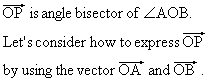
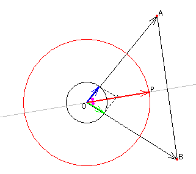
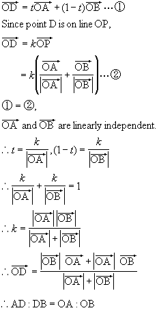
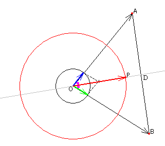
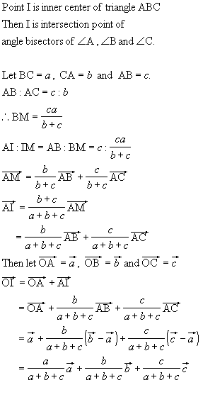
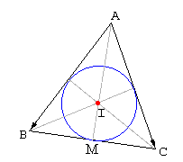

Angle Bisector
Introduction

Reffer:
Unit Vector

Applet
How to use Angle bisector.
1.Find the ratio AD:DB.
Point D is intersection point of OP and AB.


2.Express vector OI by using vector OA, OB and OC.

